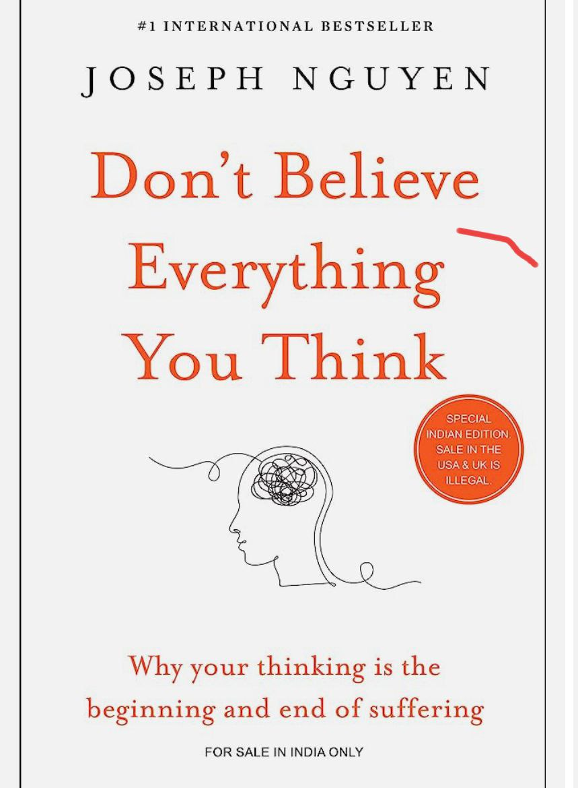

Akhilesh Party
I am a Bachelor
These are the best books u can buy online
-
- Norman Lewis was a grammarian and lexicographer from the United States who was widely recognized as one of the leading
authorities on English language talents. Throughout his life, he published various books on language-related topics, including
Roget’s New Pocket Thesaurus in Dictionary Form and 30 Days to a More Powerful Vocabulary.
- Word Power Made Easy was initially published in 1949 and has been reprinted multiple times since then. In only the second phrase
of the book, Norman Lewis says that the only thing you can do with a book like Word Power Made Easy is to engage with it, to
‘speak aloud to it, talk back to it,’ to ‘use your voice, not just your eyes and mind
-

- If you don’t believe it, well, then you’re stuck with your false thoughts til you die and that’s that.
- This means you’ll be at their mercy to make you miserable and do things that aren’t remotely in your best interest.
- Sadly, you will think you’re a victim when you’re actually choosing to not develop and use the powers which will transform your life.
- If you do believe that you can manage your thoughts, great.>
- That brings us to not believing everything you think.
- If we don’t need to believe every thought that wanders across our minds, why do we?
The answer is that it has never occurred to most of us that we can put up borders to stop wandering thoughts from drifting or
barging through the door to our mind and settling in.
- I recall how I felt when I first learned that it was possible to manage our thinking and that all thoughts aren’t created equal—surprised and elated,
like I was being given the keys to the kingdom.
- Since then, I’ve seen clients experience this same transformative aha that they don’t have to be a slave to every idea that pops into their heads.
-
- India’s External Affairs Minister Dr S. Jaishankar is an unusual combination of diplomat, politician, and public intellectual.
- “The India Way” articulates his vision of India’s strategic choices.
- That he presently serves as India’s foreign minister makes the book an important primary document through which to understand the thinking of an
influential architect of the country’s foreign policy.
- Renowned political scientist Professor Christophe Jaffrelot reviews “The India Way” for SouthAsiaSource
- S. Jaishankar is today one of Narendra Modi’s most influential ministers.
- In a government team where the number of ‘experts’ is very limited, he has a firm grasp on his subject: a career diplomat,
he climbed all the ranks of the Ministry of Foreign Affairs, up to the supreme stage of Foreign Secretary – after having been ambassador
in countries as important as China and the United States
Need My Opinion On Books Then Contact Me